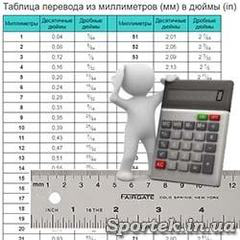

ПЕРЕВОД ММ В ДЮЙМЫ (ДЕСЯТИЧНЫЕ И ДРОБНЫЕ)

Опубликовано: 20.03.2018
В инженерном и, в частности, в велосипедном деле, на территории стран Европы и бывшего СССР используют метрическую систему. Но многие размеры, например, диметры труб или размеры покрышек, указываются и в дюймах.
Время от времени возникает необходимость перевода из одной системы измерений в другую, например, при решении вопроса совместимости размеров резины велосипедных колес.
Как перевести дюймовые размеры в метрическую систему, описано здесь, а вот обратный процесс опишем в этой статье.
В принципе, с точки зрения математики этот вопрос решается довольно просто:
Формула перевода из миллиметров (мм) в дюймы (in):
in = mm * 0.03937 или
in = mm / 25.4
Два варианта приведены просто потому, что некоторым удобно делить, а другим умножать
Таким образом: 50 мм - это 1,77”
Формула перевода из дюймов (in) в миллиметры (мм):
mm = in / 0.03937 или
mm = in * 25.4
т.е. 3" это 76,2 мм
Но с учетом того, что нашему человеку не всегда удобно или лень считать, мы решили привести здесь уже готовую таблицу с переводом от 1 до 100 мм в дюймы. Причем не только в десятичном, но и в дробном виде.
Таблица перевода из миллиметров (мм) в дюймы (in)
|
Миллиметры |
Десятичные дюймы |
Дробные дюймы |
|
Миллиметры |
Десятичные дюймы |
Дробные дюймы |
|
1 |
0,04 |
3⁄64 |
|
51 |
2,01 |
2 1⁄64 |
|
2 |
0,08 |
5⁄64 |
|
52 |
2,05 |
2 3⁄64 |
|
3 |
0,12 |
1⁄8 |
|
53 |
2,09 |
2 3⁄32 |
|
4 |
0,16 |
5⁄32 |
|
54 |
2,13 |
2 1⁄8 |
|
5 |
0,20 |
13⁄64 |
|
55 |
2,17 |
2 11⁄64 |
|
6 |
0,24 |
15⁄64 |
|
56 |
2,20 |
2 13⁄64 |
|
7 |
0,28 |
9⁄32 |
|
57 |
2,24 |
2 1⁄4 |
|
8 |
0,31 |
5⁄16 |
|
58 |
2,28 |
2 9⁄32 |
|
9 |
0,35 |
23⁄64 |
|
59 |
2,32 |
2 21⁄64 |
|
10 |
0,39 |
25⁄64 |
|
60 |
2,36 |
2 23⁄64 |
|
11 |
0,43 |
7⁄16 |
|
61 |
2,40 |
2 13⁄32 |
|
12 |
0,47 |
15⁄32 |
|
62 |
2,44 |
2 7⁄16 |
|
13 |
0,51 |
33⁄64 |
|
63 |
2,48 |
2 31⁄64 |
|
14 |
0,55 |
35⁄64 |
|
64 |
2,52 |
2 33⁄64 |
|
15 |
0,59 |
19⁄32 |
|
65 |
2,56 |
2 9⁄16 |
|
16 |
0,63 |
5⁄8 |
|
66 |
2,60 |
2 19⁄32 |
|
17 |
0,67 |
43⁄64 |
|
67 |
2,64 |
2 41⁄64 |
|
18 |
0,71 |
45⁄64 |
|
68 |
2,68 |
2 43⁄64 |
|
19 |
0,75 |
3⁄4 |
|
69 |
2,72 |
2 23⁄32 |
|
20 |
0,79 |
25⁄32 |
|
70 |
2,76 |
2 3⁄4 |
|
21 |
0,83 |
53⁄64 |
|
71 |
2,80 |
2 51⁄64 |
|
22 |
0,87 |
55⁄64 |
|
72 |
2,83 |
2 53⁄64 |
|
23 |
0,91 |
29⁄32 |
|
73 |
2,87 |
2 7⁄8 |
|
24 |
0,94 |
15⁄16 |
|
74 |
2,91 |
2 29⁄32 |
|
25 |
0,98 |
63⁄64 |
|
75 |
2,95 |
2 61⁄64 |
|
26 |
1,02 |
1 1⁄32 |
|
76 |
2,99 |
2 63⁄64 |
|
27 |
1,06 |
1 1⁄16 |
|
77 |
3,03 |
3 1⁄32 |
|
28 |
1,10 |
1 7⁄64 |
|
78 |
3,07 |
3 5⁄64 |
|
29 |
1,14 |
1 9⁄64 |
|
79 |
3,11 |
3 7⁄64 |
|
30 |
1,18 |
1 3⁄16 |
|
80 |
3,15 |
3 5⁄32 |
|
31 |
1,22 |
1 7⁄32 |
|
81 |
3,19 |
3 3⁄16 |
|
32 |
1,26 |
1 17⁄64 |
|
82 |
3,23 |
3 15⁄64 |
|
33 |
1,30 |
1 19⁄64 |
|
83 |
3,27 |
3 17⁄64 |
|
34 |
1,34 |
1 11⁄32 |
|
84 |
3,31 |
3 5⁄16 |
|
35 |
1,38 |
1 3⁄8 |
|
85 |
3,35 |
3 11⁄32 |
|
36 |
1,42 |
1 27⁄64 |
|
86 |
3,39 |
3 25⁄64 |
|
37 |
1,46 |
1 29⁄64 |
|
87 |
3,43 |
3 27⁄64 |
|
38 |
1,50 |
1 1⁄2 |
|
88 |
3,46 |
3 15⁄32 |
|
39 |
1,54 |
1 17⁄32 |
|
89 |
3,50 |
3 1⁄2 |
|
40 |
1,57 |
1 37⁄64 |
|
90 |
3,54 |
3 35⁄64 |
|
41 |
1,61 |
1 39⁄64 |
|
91 |
3,58 |
3 37⁄64 |
|
42 |
1,65 |
1 21⁄32 |
|
92 |
3,62 |
3 5⁄8 |
|
43 |
1,69 |
1 11⁄16 |
|
93 |
3,66 |
3 21⁄32 |
|
44 |
1,73 |
1 47⁄64 |
|
94 |
3,70 |
3 45⁄64 |
|
45 |
1,77 |
1 49⁄64 |
|
95 |
3,74 |
3 47⁄64 |
|
46 |
1,81 |
1 13⁄16 |
|
96 |
3,78 |
3 25⁄32 |
|
47 |
1,85 |
1 27⁄32 |
|
97 |
3,82 |
3 13⁄16 |
|
48 |
1,89 |
1 57⁄64 |
|
98 |
3,86 |
3 55⁄64 |
|
49 |
1,93 |
1 59⁄64 |
|
99 |
3,90 |
3 57⁄64 |
|
50 |
1,97 |
1 31⁄32 |
|
100 |
3,94 |
3 15⁄16 |